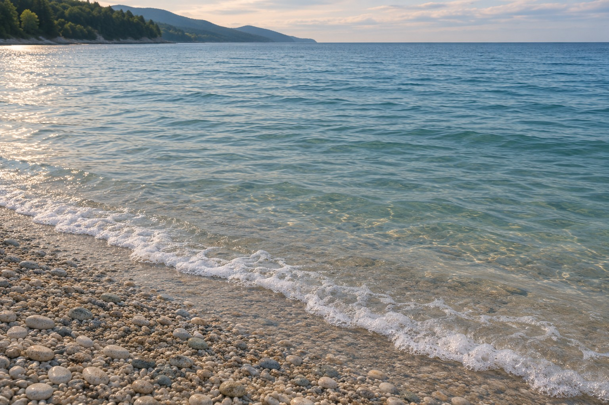

サービスについて
ペットの代理海洋散骨とは
犬や猫など、大切なペットのご遺骨を海へお送りする供養のかたちです。
代理散骨では、ご家族からご遺骨をお預かりし、
事業者がご家族に代わって散骨を行います。
どんな供養がご家族に合うか、
ゆっくり考えていただけるように、
サービス内容や流れをご案内します。
供養のかたちを考えるとき
このようなお悩みをお持ちの方へ
- 自宅に安置しているご遺骨をどう供養するか迷っている
- お墓や納骨以外の
供養のかたちを知りたい - 乗船が難しく、
散骨を代わりにお願いしたい
ご検討にあたって
安心して選べるように
お申し込みを考えるときに、先に知っておきたいことをまとめました。
- ご家族の乗船が不要
- 代理散骨は、ご家族の代わりに事業者が散骨する形式です。
- ご遺骨を預ける前に確認
- お預かりの方法や準備するものは、正式なご案内でお確かめください。
- 費用と実施後の案内が分かるように
- 費用に含まれる内容や散骨後の連絡方法は、本公開時にご案内する予定です。
ご利用の流れ
ご相談から散骨まで
以下は流れの仮案です。お預かり方法や実施時期は要確認です。
ご相談
供養について気になる点をお聞かせください。
内容確認・お申し込み
費用や実施内容をご確認のうえ、お申し込みいただきます。
ご遺骨のお預かり
事前にご案内する方法でご遺骨をお預かりします。
代理散骨
ご家族に代わって海へお送りします。
料金のご案内
事前に知っておきたい費用
お申し込み前に確認できるよう、本公開時に料金と内訳を掲載する予定です。
ペット代理海洋散骨
- 基本料金
- 要確認
- 基本料金に含まれる内容
- 要確認
- 追加費用が発生する条件
- 要確認

ご相談の前に
よくあるご質問
家族が船に乗る必要はありますか？
代理散骨は、ご家族が乗船せず、事業者が代わりに散骨を行う形式です。
自宅で保管しているご遺骨も相談できますか？
ご相談時に、保管状況やご遺骨の状態をお伝えください。お預かりできる条件は要確認です。
散骨の日程や場所は選べますか？
日程や海域の指定可否、天候による変更時のご案内は要確認です。
散骨後に連絡や証明書はありますか？
実施後の連絡方法や、証明書・写真の有無は要確認です。